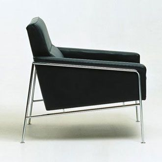
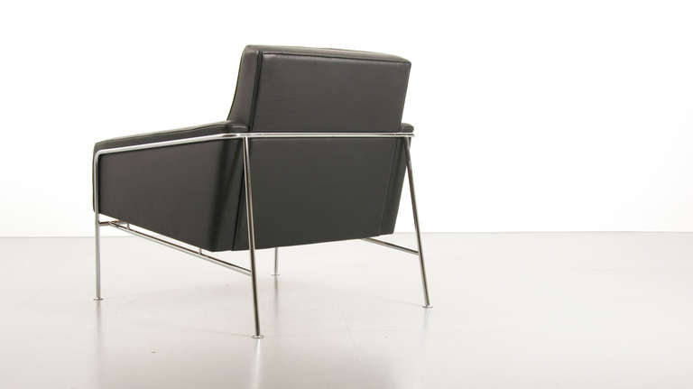
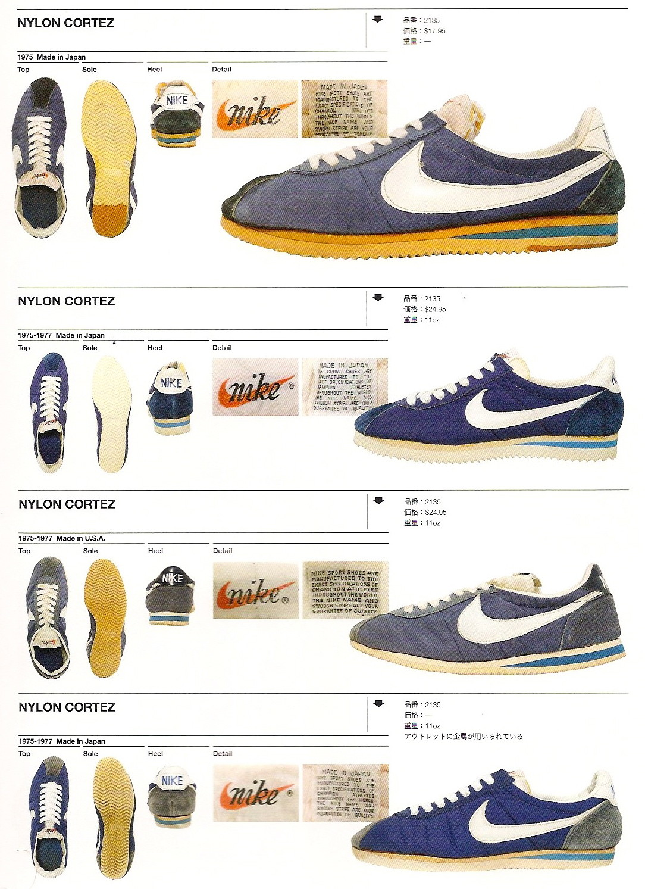

SERIES 3300 ARMCHAIR - 1958
Designed by Arne Jacobsen for Fritz Hansen, Jacobsen got the inspiration for the Series 3300 from a sofa he designed especially for his own home in the 1940s. The series exudes Jacobsen's unfailing sense of line and proportion and his ability to design everlasting classics. The Series 3300 comes fully upholstered as both an easy chair and a 2 or 3-seater sofa. It comes in a wide range of fabric and leather types. The frame is made of chromed steel tubes.
Designed by Arne Jacobsen for Fritz Hansen, Jacobsen got the inspiration for the Series 3300 from a sofa he designed especially for his own home in the 1940s. The series exudes Jacobsen's unfailing sense of line and proportion and his ability to design everlasting classics. The Series 3300 comes fully upholstered as both an easy chair and a 2 or 3-seater sofa. It comes in a wide range of fabric and leather types. The frame is made of chromed steel tubes.


CORTEZ - 1972
The Nike Cortez was the first official track shoe, designed by an Olympic track coach, Bill Bowerman. The sneaker was designed to give runners a more comfortbale running shoe, to help with long distances and rough terrain - the thick rubber sole was made for durability and the raised heel help reduced injuries such as Achilles tendon strains. The sneaker was released first during the 1972 Olympics, the same year Blue Ribbon sports made it's name change to what is now Nike. The sneaker is also very light compared to most running shoes of that time.
The long history of the Cortez starts back in 1966 when Nike was still Blue Ribbon Sports, a company helmed by Bill Bowerman and Phil Knight that was mostly a distributor for Onitsuka Tiger. Bowerman, the genius behind plenty of early Nike innovations, designed the shoe. The sneaker’s name itself was a reflection of the young Nike’s rebellious nature Bowerman and Knight originally wanted to call the sneaker the Aztec as a reference to the 1968 Olympics to be held in Mexico City. This was a tactic of adidas’ that Knight liked – naming shoes after Olympic host cities – but they had to cede the moniker because adidas already had the Azteca Gold. In a brainstorming session for the shoe, Bowerman decided the model should be aimed to crush the Azteca. “Who conquered the Aztecs? Who is that Spaniard responsible for 400 years of Montezuma’s revenge?” Moore recalls Bowerman asking. “Cortes,” Knight replied. “Hernan Cortes.”
The Nike Cortez was the first official track shoe, designed by an Olympic track coach, Bill Bowerman. The sneaker was designed to give runners a more comfortbale running shoe, to help with long distances and rough terrain - the thick rubber sole was made for durability and the raised heel help reduced injuries such as Achilles tendon strains. The sneaker was released first during the 1972 Olympics, the same year Blue Ribbon sports made it's name change to what is now Nike. The sneaker is also very light compared to most running shoes of that time.
The long history of the Cortez starts back in 1966 when Nike was still Blue Ribbon Sports, a company helmed by Bill Bowerman and Phil Knight that was mostly a distributor for Onitsuka Tiger. Bowerman, the genius behind plenty of early Nike innovations, designed the shoe. The sneaker’s name itself was a reflection of the young Nike’s rebellious nature Bowerman and Knight originally wanted to call the sneaker the Aztec as a reference to the 1968 Olympics to be held in Mexico City. This was a tactic of adidas’ that Knight liked – naming shoes after Olympic host cities – but they had to cede the moniker because adidas already had the Azteca Gold. In a brainstorming session for the shoe, Bowerman decided the model should be aimed to crush the Azteca. “Who conquered the Aztecs? Who is that Spaniard responsible for 400 years of Montezuma’s revenge?” Moore recalls Bowerman asking. “Cortes,” Knight replied. “Hernan Cortes.”